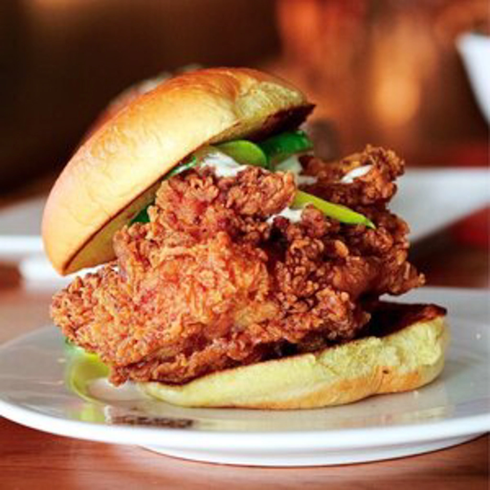

Our Top Boston’s Must Try Places to Eat
Aug 15 - Written by Bonnie and Emily
Boston is full of some amazing restaurants and these are our top places for you to try next!
As we have both spent at least a couple of years in Boston trying out all the top places other people have recommended, we have accumulated some of our favorites here.
James Hook & Co
440 Atlantic Ave, Boston, MA 02210
James Hook is one of our favorite spots for one of the must try food items in Boston, lobster rolls! Located just at the foot of the bridge across from Seaport, is their spacious outdoor dining area and the cutest shack where the delicious lobster rolls are made. I’m sure you all have found a ton of different lobster roll places in Boston that are highly recommended, so of course we have to explain why we like James Hook so much? Their menu comes with two different types of lobster rolls, one with butter and one with mayo. We love the butter lobster roll for its amazingly fresh lobster meat, that we recommend drizzling butter with to bring out its flavor. The mayo lobster has the perfect mayo to lobster ratio to provide a moist and delicious filling to pair with the bread roll. We also often like to order a side of clam chowder to share for the table. The clam chowder at James Hook is a thicker consistency but has a ton of fresh clams and rich flavors to go with your meal! Since James Hook is so close to Seaport its also the perfect destination to stop for lunch before walking over to Seaport to enjoy a view of Boston and grab a drink at the nearby beer garden! Make sure to also head inside the restaurant to take a look at their lobster tanks or pick out any of their other fresh seafood you might want to try!
Time Out Market
401 Park Dr, Boston, MA 02215
There might be a Timeout market in many different cities across the country but they definitely don’t have the yummy stalls that are available at Boston’s Timeout market! With such a large variety of cuisines, it's the perfect place to grab a bite to eat with a large group. You can start off with one of the tasty cocktails from their long list of options and even get one in a whole pineapple or coconut! Once you’ve gotten your drink you can decide on which stall to try or, even better, try all of them! Some of our favorites from the TImeout market include the tacos at Taqueria El Barrio, their steak taco topped with guac provides refreshing and rich flavors. You wouldn’t think a chicken sandwich would be one of our favorites from the market but the fried chicken sandwich from Bisq is one of our other favorites! The crunchy chicken and soft bread combined made a delicious sandwich, not to mention the spread of buttermilk ranch that enhances the flavor of the entire sandwich! The Timeout market is also located right next to Fenway where you and your friends and family could enjoy a Red Sox baseball game before or after a delicious meal at the market!

Photo Courtesy of Brianna T.
Quincy Market
4 S Market St, Boston, MA 02109
If you’re looking for something similar to the Timeout Market, go check out Quincy Market! Located within Faneuil Hall Marketplace, you’ll find one long path of countless food options. Our goto spot here is Boston Chowda Co for their infamous clam chowder in a bread bowl. Pro tip, get a medium chowder with the bread bowl on the side so you can dip your bread into your soup and make for easier eating. However, if you want to live the classic experience, then you must get the chowder in the bread bowl. Either way, you won't be disappointed as the chowder is full of clams, potatoes, and creaminess that is everything you’d expect in a chowder. There are many other stalls that offer clam chowder, but when you see the long line here, you know they are the best! If chowder isn’t your thing then there are many other options for you, from drinks to food and desserts, you’ll definitely find something tasty here!
The Daily Catch
323 Hanover St, Boston, MA 02113
Just minutes away from Quincy Market, you’ll find yourself in Boston’s North End, home of some of the best Italian food you’ll find in the area. The Daily Catch is our favorite goto spot for some seafood pasta. What’s better than combining what Boston is known for and what the North End is known for?! The Daily Catch has a simple menu but the combinations are abundant. We love coming here and ordering a fried calamari to share as well as one or two seafood pastas. Their squid ink pasta is amazing and is definitely more unique than your average linguine. If you’re more into shellfish pasta, you get to choose between red and white sauce so whatever your taste preference is will be accommodated. Whenever we go to the Daily Catch, we are never disappointed by their quality and always leave having eaten a little too much.
Mike's Pastry
300 Hanover St, Boston, MA 02113
Located just across the street from The Daily Catch, you’ll find the iconic Mike’s Pastry. This place is constantly packed full of customers awaiting their cannoli orders and once you get a taste of one of their cannoli’s, you’ll understand why. With nearly 20 different flavor options to choose from, there is bound to be a cannoli flavor you like. Our favorite is their pecan caramel cannoli as it is the perfect balance of flavors with the caramel and pecans. Beware, these cannolis are not small - each one is packed full of their filling and is quite hefty. Although they are known for their cannoli’s, Mike’s Pastry also offers a wide variety of other desserts, from cookies to lobster tails (the dessert, not an actual lobster tail), your sweet tooth will most definitely be satisfied.
As Boston is known for their seafood, we focused this list around that with the addition of Mike’s Pastry. However, there is so much more Boston has to offer for food that we have yet to try and share with you all.